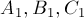
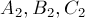
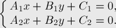
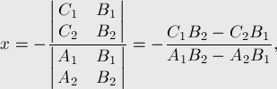
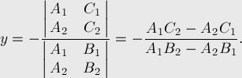
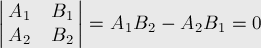
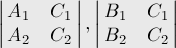

MAXimal
добавлено: 11 Jun 2008 10:19
редактировано: 7 Jul 2009 17:57
Содержание [скрыть]
Точка пересечения прямых
Пусть нам даны две прямые, заданные своими коэффициентами  и . Требуется найти их точку пересечения, или выяснить, что прямые параллельны.
Решение
Если две прямые не параллельны, то они пересекаются. Чтобы найти точку пересечения, достаточно составить из двух уравнений прямых систему и решить её:

Пользуясь формулой Крамера, сразу находим решение системы, которое и будет искомой точкой пересечения:


Если знаменатель нулевой, т.е.

то система решений не имеет (прямые параллельны и не совпадают) или имеет бесконечно много (прямые совпадают). Если необходимо различить эти два случая, надо проверить, что коэффициенты прямых пропорциональны с тем же коэффициентом пропорциональности, что и коэффициенты
прямых пропорциональны с тем же коэффициентом пропорциональности, что и коэффициенты  и
и  , для чего достаточно посчитать два определителя, если они оба равны нулю, то прямые совпадают:
, для чего достаточно посчитать два определителя, если они оба равны нулю, то прямые совпадают:
Реализация
struct pt { double x, y; }; struct line { double a, b, c; }; const double EPS = 1e-9; double det (double a, double b, double c, double d) { return a * d - b * c; } bool intersect (line m, line n, pt & res) { double zn = det (m.a, m.b, n.a, n.b); if (abs (zn) < EPS) return false; res.x = - det (m.c, m.b, n.c, n.b) / zn; res.y = - det (m.a, m.c, n.a, n.c) / zn; return true; } bool parallel (line m, line n) { return abs (det (m.a, m.b, n.a, n.b)) < EPS; } bool equivalent (line m, line n) { return abs (det (m.a, m.b, n.a, n.b)) < EPS && abs (det (m.a, m.c, n.a, n.c)) < EPS && abs (det (m.b, m.c, n.b, n.c)) < EPS; }